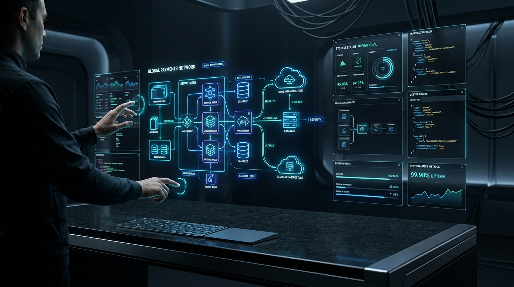
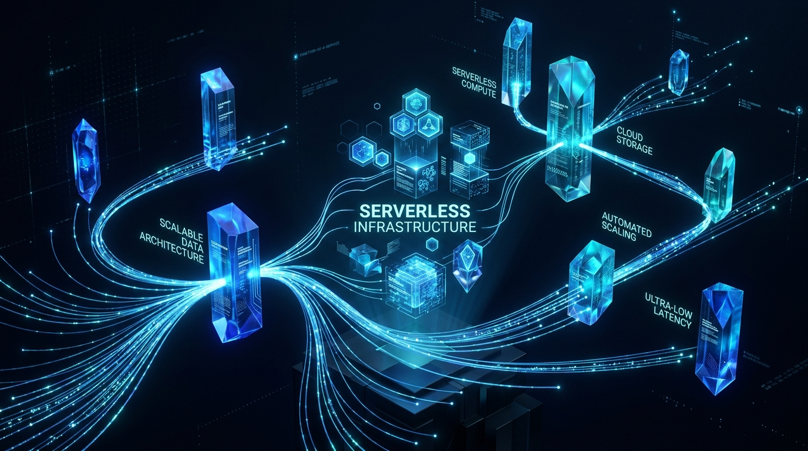
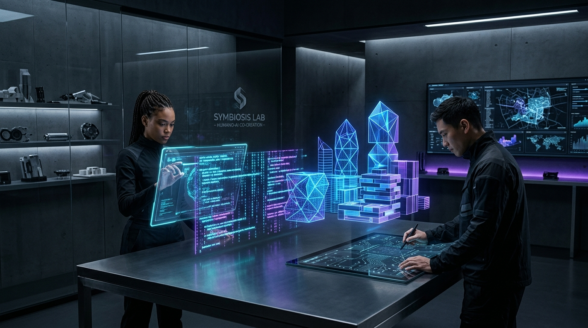
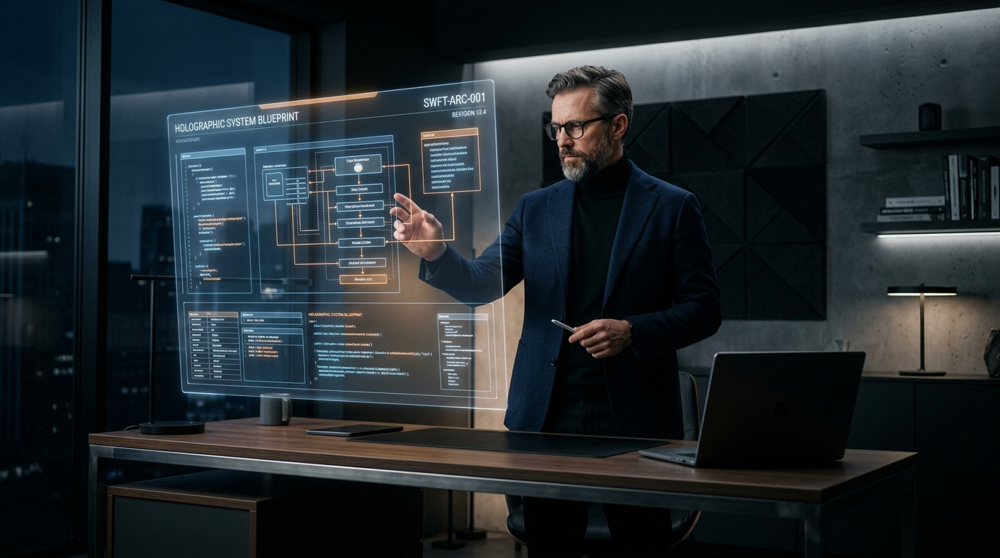

重塑数字交付范式
以极客工匠精神打造前沿无运维资产
Vanguard (先锋) 是一个专注复杂业务顶层设计、业务 SOP 规约化、高保真系统仿真与零运维静态体系构建的数字架构实验室。 摒弃臃肿的微服务堆叠与云厂商绑定，坚持前沿部署、AI 协同推演、极简手搓与追求卓越。

核心开发理念与设计哲学
我们坚信优秀的数字架构不应被冗余的技术栈绑架。前沿并非复杂的同义词，极致的克制与精巧才是优雅的终极形态。

前沿部署与无服务器静态体系
摒弃复杂的微服务容器群与常驻后端数据库。以纯静态前端作为核心呈现载体，结合 Cloudflare 全球边缘 CDN 与 GitHub Pages 自动化分发，实现 0 停机维护与永久持久化。
- ✓边缘瞬时加载：Global Anycast CDN 节点接入
- ✓终身免运维：无数据库宕机与漏洞补丁风险
- ✓极速 CI/CD：Git 提交即自动化纳秒级全球同步

AI 深度协同进化与逻辑推演
将大模型视作平行架构结对助手与智能副官。从自然语言业务资料到系统 ER 关系图、业务状态机、高保真仿真样板的全链路推演，一人即可完成数十人团队才能交付的深度方案。
- ✓法理合规审计：自动化排查行业法理红线
- ✓红蓝对抗推演：人机多轮对抗审校实操方案
- ✓高精原型直出：跳过低保真，直接输出像素级体验
核心专业服务内容
我们为追求极致效率与卓越体验的创新企业，提供从商业逻辑顶层设计到高精视觉系统落地的全栈定制化服务。
战略架构顶层设计与技术路线图
深入企业商业模式核心，剖析信息拓扑与数据流转瓶颈，输出具备前瞻性、模块化且解耦的系统要件定义与演进路线图。
高人效业务 SOP 与合规规约工程化
将碎片化实务梳理为严密的标准作业程序（SOP）。深度融入行业法理风控红线与智能倒排机制，确保方案合规落地。
高保真沉浸式原型推演与仿真工作台
拒绝扁平草图。直接构建涵盖门禁登录、全景工作台与业务台账的高保真可交互纯静态样板，供决策层与客户直观体验。
零依赖静态交付资产构建与边缘分发
建立从本地 Markdown 规范到纯静态自包含网站的极简自动化管道，配置 GitHub Actions 部署与独立域名 SSL 挂载。
精选商业案件展台
所有交付物均以高标准公开展出，支持线上独立域名访问与本地离线浏览双模交互。
工匠精神与自研哲学
真正的掌控力源自对商业机理的穿透力、底层技术的熟稔与视觉审美的偏执追求。

Nick / Vanguard 平台创始人
长期深耕于复杂信息架构设计、前沿大模型工程落地与高保真交付体系。坚决反思现代软件工程中日益严重的工具链膨胀与“中间商堆叠”现象。 借助 Vanguard 工具链与 AI 深度协同，每一份产物皆为可直接运行、永久持久化的数字资产。